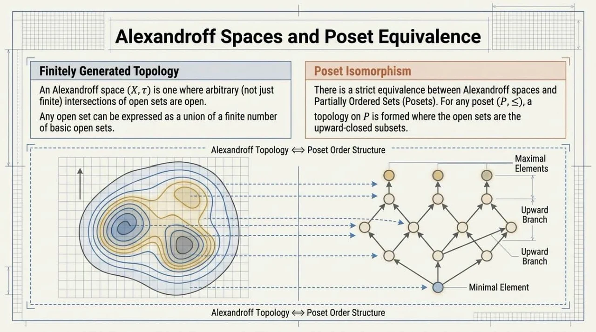
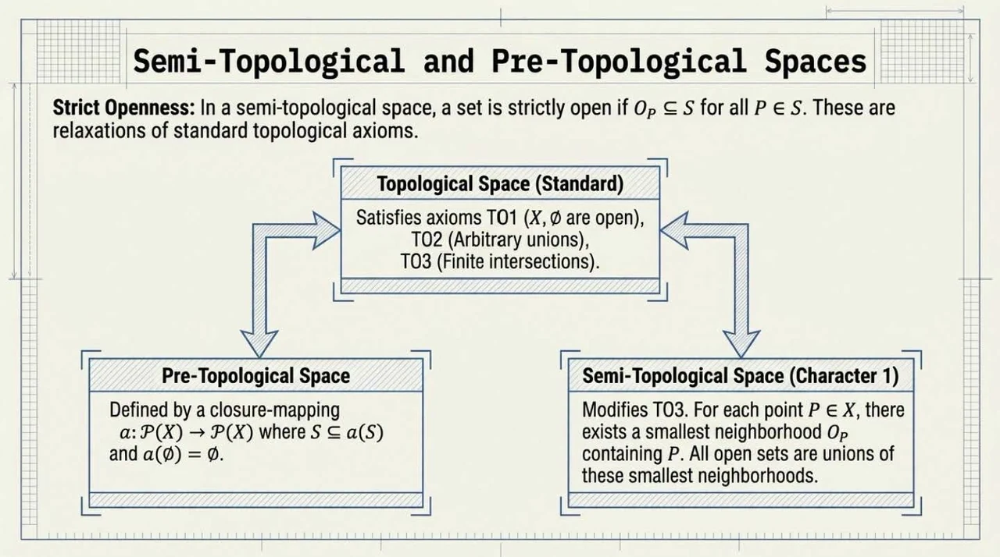

기둥 2 · 공간의 성질 · 10장
가장 작은 이웃 — 알렉산드로프 공간과 느슨한 규칙
「내 섬」이 있는 공간, 그리고 규칙을 하나 바꾸면
「내 섬」이 있는 공간, 그리고 규칙을 하나 바꾸면
핵심 질문 — 점마다 「가장 작은 이웃」이 정해져 있으면 공간은 어떻게 달라지고, 규칙을 하나 빼면 무엇이 무너질까?
04장에서 이산 위상의 가장 작은 이웃은 {x}, 밀착 위상은 전체였어요. 모든 점에 가장 작은 이웃이 있는 공간을 알렉산드로프 공간이라 불러요. 이산 위상을 조금 「느슨하게」 만든 공간들이라, 컴퓨터 그림과 순서 구조에서 많이 써요.
숫자 요약은 이 장의 예시 계산에서 나온 값입니다(실제 데이터가 아닌 설명용 값).
오늘은 모아와 시아의 1:1 토론이에요. 「내 섬」이 있는 공간 대 규칙이 느슨한 공간.
가장 작은 이웃이 있으면 정말 편해요!
규칙을 덜 지키면 더 자유롭지 않을까요?
행렬·벡터, 복잡한 공식을 몰라도 됩니다. 그림을 움직여 보고, 밑줄 친 말을 누르면 뜻이 나옵니다.
이 페이지 사용법: 밑줄 친 말을 누르면 뜻이 나옵니다(Esc로 닫기). 단계마다 그림을 직접 움직여 보고, 끝의 확인 퀴즈로 점검하세요. 앞 장: 09 떼어 놓기 — 콤팩트한 집합은 왜 닫혀 있나
인턴 모아는 「모든 점에 가장 작은 이웃이 있어야 다루기 쉽다」 편, 인턴 시아는 「규칙을 느슨하게 해도 된다」 편을 맡아요.
점마다 O_P가 있으면, 「P 근처」를 물을 때 O_P 하나만 보면 돼요!
그런데 수직선에는 가장 작은 이웃이 없잖아요. 그래도 잘 쓰는데요.
둘 다 맞는 말이야. 어디서 무엇을 원하느냐에 달렸지.
이산 위상은 O_P = {P}인 가장 극단적인 알렉산드로프 공간이에요.
점이 유한 개인 공간은 모두 알렉산드로프 공간이에요. 컴퓨터 속 공간은 거의 다 유한하죠.
규칙 하나를 바꿔 보면, 그 규칙이 무엇을 지켜 주고 있었는지 드러나요.
용어가 낯설어도 괜찮아요. 오늘 질문은 하나 — 「점마다 내 섬이 있나?」
상황 질문 — 반에서 「나를 꼭 포함하는 모임」을 모두 겹치면, 늘 함께 다니는 단짝 무리가 남아요. 모든 학생에게 그런 무리가 정해져 있을까요?
「모두 겹친 것」이 열려 있어야 한다는 건 01장 규칙 ③이랑 뭐가 달라요?
학교 수학으로 보면: 01장 규칙 ③은 「유한 개 겹치기」만 보장했어요. 알렉산드로프 공간은 「끝없이 많이 겹쳐도」 열린 집합이라는 더 센 약속이에요.
| 식 조각 | 읽는 법 | 뜻 |
|---|---|---|
| O_P | 오 피 | P를 담는 열린 집합을 모두 겹친 것 |
| ⋂ | 모두 겹치기 (교집합) | 여러 집합에 다 들어 있는 점만 남기기 |
| U = ⋃ O_P | 유는 오 피들의 합집합 | 열린 집합 U는 그 안의 점들의 O_P를 합친 것 |
칼림스키 조각: 점 {0, 1, 2}, 열린 집합 {∅, {1}, {0, 1}, {1, 2}, {0, 1, 2}} (홀수 1이 열린 점)
점 1을 담는 열린 집합: 4개 모두 → 모두 겹치면 {1} → O₁ = {1}
점 0을 담는 열린 집합: {0,1}, {0,1,2} → 겹치면 {0, 1} → O₀ = {0, 1}
점 2: O₂ = {1, 2}. 그리고 전체 {0, 1, 2} = O₀ ∪ O₂
열린 집합은 결국 「내 섬」 몇 개를 합친 거군요. 03장의 기저랑 같은 이야기예요!
모든 학생에게 단짝 무리가 정해져 있으면, 어떤 공식 모임이든 단짝 무리 몇 개를 합친 것이 돼요.
알렉산드로프 공간에서는 임의 개의 열린 집합을 겹쳐도 열려 있어서 점마다 가장 작은 이웃 O_P가 있고, 모든 열린 집합은 O_P들의 합집합이에요. O_P들이 가장 작은 기저가 돼요.
칼림스키 조각에서 점 0을 고르고 가장 작은 이웃을 보세요.
점 0의 섬은 {0}이겠죠!
{0}은 목록에 없어. 0을 담는 가장 작은 건 {0, 1}이야.
원자료 「Alexandroff Spaces and Poset Equivalence」 왼쪽 상자 「Finitely Generated Topology」.

상황 질문 — 동아리 연합은 「합친 모임」은 인정하지만, 「두 동아리에 다 든 사람 모임」은 인정하지 않는다고 해요. 어떤 일이 생길까요?
동아리 연합이 겹친 모임을 인정하지 않으면, 두 동아리에 다 든 학생에게 「나의 가장 작은 모임」이 둘 생겨요.
「합집합만 되는 예」 {∅, {1, 2}, {2, 3}, 전체}에서 점 2를 담는 가장 작은 열린 집합이 {1, 2}와 {2, 3} 둘이에요. 겹친 곳 {2}가 목록에 없기 때문이에요. 원자료의 전위상은 S ⊆ a(S), a(∅) = ∅만 지키는 닫힘 함수 a로 정한 구조예요.
「합집합만 되는 예」를 눌러 세 규칙을 점검해 보세요.
규칙 ①, ②는 통과! 그 정도면 쓸 만하지 않나요?
점 2의 가장 작은 이웃이 뭔지 말해 봐. 하나로 안 정해지지?
원자료 「Semi-Topological and Pre-Topological Spaces」의 세 상자.

모아가 AI에게 「점이 유한 개인 공간에는 늘 가장 작은 이웃이 있나요?」라고 물었어요.
AI가 서로 다른 두 성질(가장 작은 이웃, 하우스도르프)을 하나로 묶어 말하면, 각 성질을 극단의 예(밀착 위상)에 따로 대 보세요.
홀수 1은 열린 점, 짝수 0과 2는 닫힌 점인 칼림스키 조각에 열린 집합이 몇 개인지 맞붙었어요.
「5개. 「위로 닫힌」 것만 세야 해.」
「점 3개니까 부분집합 8개 전부요!」
누가 맞을지 먼저 예상해 보고 단추를 누르세요. 판정은 계산 결과로만 합니다.
개념정리 흐름: 알렉산드로프 공간 → 느슨한 위상(전위상·합집합만 되는 구조)
| 개념 | 한 줄 뜻 | 일상 비유 | 비유의 한계 |
|---|---|---|---|
| 알렉산드로프 공간 | 끝없이 겹쳐도 열린 집합 | 단짝 무리가 정해진 반 | 수직선은 알렉산드로프가 아님 |
| 가장 작은 이웃 O_P | P를 담는 열린 집합을 모두 겹친 것 | 내 섬 | 이산은 {P}, 밀착은 전체 |
| 느슨한 위상 | 규칙 하나를 바꾼 구조 | 겹친 모임을 인정 안 하는 연합 | 분야마다 이름·정의가 달라 출처 확인 필요 |
토론 결과: 모아 승. 오늘은 「내 섬」이 있는 쪽이 다루기 쉬웠어요.
규칙이 하는 일을 알게 됐으니 저도 얻은 게 있어요.
다음엔 섬들을 위아래로 줄 세워 봐요!
다음 장 예고: 11장은 조별 과제예요. 「내 섬」 관계를 위아래 순서 그림과 0/1 이웃 행렬로 그려 봐요.